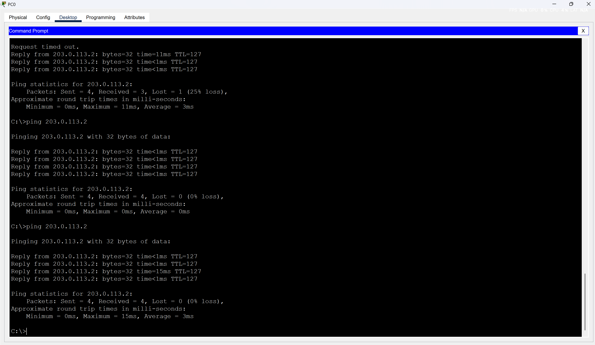
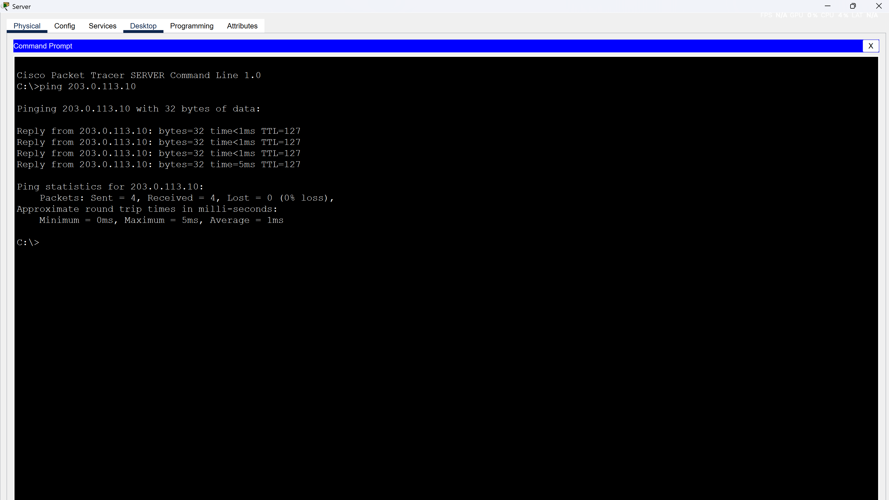

This lab demonstrates the configuration and operation of Static Network Address Translation (NAT), which maps private IP addresses to fixed public IP addresses to enable access to external networks. The setup includes two internal PCs behind a NAT router (R1), connected to an external server, showcasing one-to-one IP translations for both inbound and outbound traffic.
What is Static NAT? Static NAT provides a permanent mapping of a private IP to a public IP, allowing external devices to initiate connections to internal devices using the public IP. This lab uses static NAT to map two PCs to unique public IPs.
The lab configures Router R1 to perform static NAT, ensuring PC0 and PC1 are accessible from Server1 using their mapped public IPs while maintaining their private IPs internally.
interface Fa0
ip address 192.168.1.10 255.255.255.0
default-gateway 192.168.1.1
exit
interface Fa0
ip address 192.168.1.11 255.255.255.0
default-gateway 192.168.1.1
exit
interface range F0/1 - 2
switchport mode access
no shutdown
exit
interface G0/1
switchport mode access
no shutdown
exit
interface G0/1
ip address 192.168.1.1 255.255.255.0
no shutdown
exit
interface G0/0
ip address 203.0.113.1 255.255.255.0
no shutdown
exit
ip nat inside source static 192.168.1.10 203.0.113.10
ip nat inside source static 192.168.1.11 203.0.113.11
interface G0/1
ip nat inside
exit
interface G0/0
ip nat outside
exit
interface Fa0
ip address 203.0.113.2 255.255.255.0
default-gateway 203.0.113.1
exit
Verify the NAT configuration on Router R1 using show ip nat translations to confirm the static mappings (192.168.1.10 to 203.0.113.10, 192.168.1.11 to 203.0.113.11). Check NAT statistics with show ip nat statistics to review translation counts and pool usage.
A successful ping from PC0 to Server1 (203.0.113.2) verifies outbound connectivity, with NAT translating 192.168.1.10 to 203.0.113.10. A ping from Server1 to PC0 (203.0.113.10) confirms inbound connectivity via the static NAT mapping. Repeat for PC1 (203.0.113.11).
 